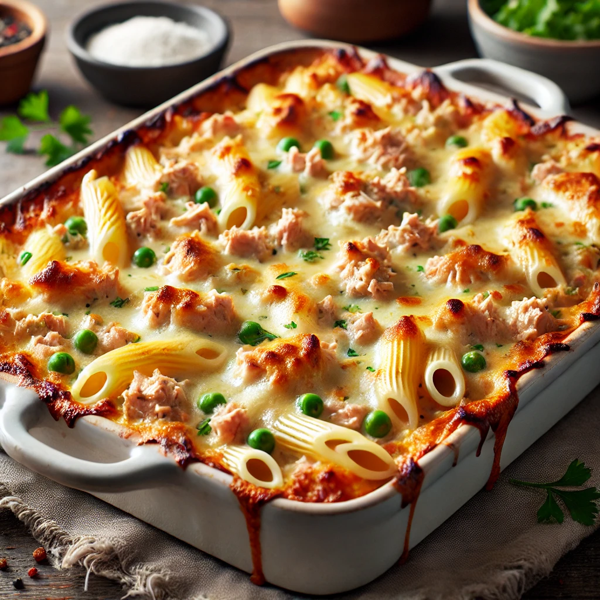

Tuna Bake

Description
this is my high protein and macro friendly tuna bake
recipe for my fellow lifters. the recipe itself will have up to 5 servings
and conveniently cover your meal prep!
Ingredients
- 500g pasta of choice - i prefer penne or shell pasta
- 700g chunk style tuna
- 1 leggos tuna bake sauce
-
veggies: (up to preference)
- 4 garlic cloves
- 1 large onion
- 1/2 capsicum
- 1/2 cup sliced eggplant
- 1 cup shredded low fat cheese
Steps
- preheat oven to 180°C
- prep and chop veggies
- boil pasta until al dente, in the meantime:
-
pan fry veggies on medium-low heat with extra-virgin olive oil and
season
- example seasoning:
- salt
- pepper
- garlic powder
- paprika
- oregano
- when veggies are soft: add drained tuna
- after tuna is a bit golden: add tuna bake sauce
- optional: season pasta sauce further
-
add pasta (and 1/2 cup pasta water) to sauce and mix well
-
add everything into a baking dish and generously top with shredded
cheese 🤩
- bake for 20 minutes until golden
- stand for 3 minutes then bon appetit!